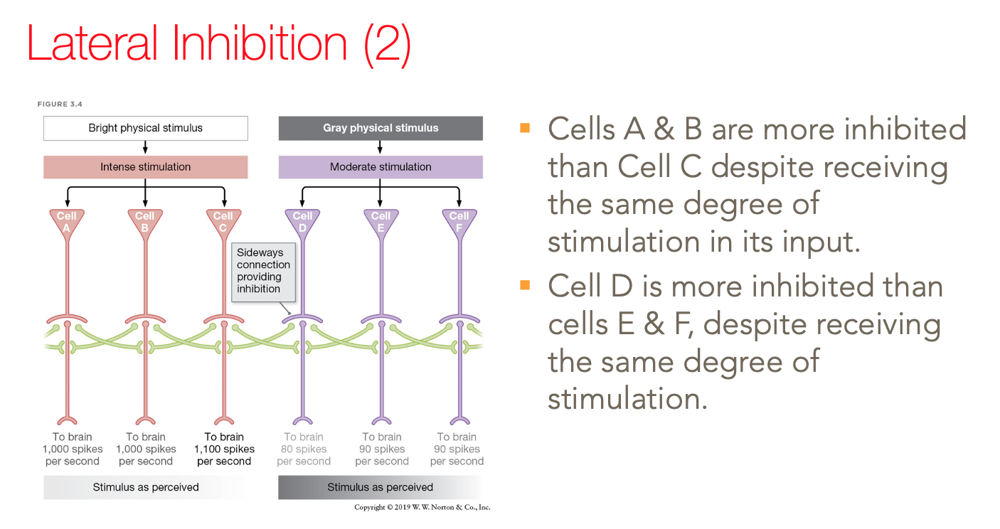

class: center middle # How does the brain fit in to cognitive science? --- # Recall Marr's Levels of Analysis - Computational - Algorithmic - Implementational We've been discussing cognitive science at the **computational** and **algorithmic** levels, mostly. The brain is the physical system that implements the **algorithms** and carries out the **computations**. --- class: center middle #Should we consider the implementational level? --- ## One view says, "no." Consider Macs and PCs. - They both have the same general components: - long term storage (e.g., disk drive) - memory - Central Processing Unit(s): CPU(s) - They differ in their internal circuitry, mostly the CPU(s) - Even among computers of the same 'type' (e.g., Macs) the CPUs differ dramatically depending on the year of manufacture. And yet, they all run Word, Chrome, Photoshop, etc...! --- ## We understand how these programs work without understanding the details of the computer. Theories in cognitive science at the algorithmic and computational levels are like the programs running on a computer. ## So, by analogy, we should be able to understand human (and animal) cognition without knowing much about the brain. --- ## Put differently, Cain talks about "multiple realizability" and the "essence" of cognition: - We assume that physical (i.e., brain) states support mental (i.e., cognitive) states. - We observe that different physical states can support the same cognitive states and processes (i.e., **multiple realizability**). - "The upshot of this view [...] is a rejection of the idea that the essence of cognition lives at the neural level" (Cain, Chapter 6) Historically, in cognitive science (i.e., the mid 20th century), this was not problematic because not much was known about how the brain computes. ### Those were a few perspectives of the implementation-isn't-so-important view. --- ## Another view says, "yes," it's important to consider implementation. Facts about how the brain works may inform and constrain the kinds of theories we posit about the algorithms that carry out the computations. - An example: Mach bands --- # Mach Bands <img src="images/M6/mach.png" alt="drawing" style="width:90%;"/> ??? Edge enhancement, produced by lateral inhibition, helps us to perceive the outline that defines an object’s shape. But the same process can produce illusions — including the Mach bands. Each vertical strip in this figure is of uniform light intensity, but the strips don’t appear uniform. For each strip, contrast makes the left edge (next to its darker neighbor) look brighter than the rest, while the right edge (next to its lighter neighbor) looks darker. To see that the differences are illusions, try placing a thin object (such as a toothpick or a straightened paper clip) on top of the boundary between strips. With the strips separated in this manner, the illusion disappears. AP/Wide World Photos --- # Lateral Inhibition - Cells linking the retina and brain .orange[already perform computations analyzing the visual input.] - .orange[Lateral inhibition:] the inhibition of a cell’s neighboring cells owing to its having been stimulated. ---  ??? - Cell B receives strong inhibition from all its neighbors, because its neighbors are intensely stimulated. - Cell C, in contrast, receives inhibition only from one side (because its neighbor on the other side, Cell D, is only moderately stimulated). - As a result, Cells B and C start with the same input, but Cell C, receiving less inhibition, sends a stronger signal to the brain, emphasizing the edge in the stimulus. - The same logic applies to Cells D and E, and it explains why Cell D sends a weaker signal to the brain. - Note, by the way, that the spikes per second numbers, shown in the figure, are hypothetical and intended only to illustrate lateral inhibition’s effects. --- ## Another view says, "yes," it's important to consider implementation. - Not any physical system can support a given mental state. - complex cognitive complexity requires physical complexity (Cain, Chapter 6) -- - Some neuroscientists challenge the multiple realizability view. - the interface between algorithm and implementation between mind and brain is different from the interface between program and physical computer. --- # Where the computer analogy might break down. .image-95[] --- layout: true # Where the computer analogy might break down. .pull-right[.image-100[]] --- - There are layers of hidden computational machinery between the computer code--the algorithm that carries out the computational goal--and the hardware implementation. - compiler - assembler - These layers depend on the particular implementation, but they are not part of the implementation; they are software, not hardware --- ### Is there anything like this in the mind/brain? - It's not clear what this would look like like. - The connection between neural circuits and algorithms seem to be much more direct. - .red[There may not be an option for multiple realizability.] At least not in the same way as it exists in computers. -- - The interface between algorithms and neurons is, for most of cognition, a mystery. ??? But, recall there was the spatial location system in rats and birds that were functionally the same, but realized with different neural circuits. --- layout: false # Cognitive Neuroscience Despite the challenges of understanding how low-level neural circuits support cognition, the field of cognitive neuroscience has revealed many insights about larger scale organization and function. Such as, -- - insights into which cognitive representations and processes are supported by which parts of the brain - working and long term memory - various components of language - visual processing and representation - the representation of faces vs other objects -- - how cognitive processes are affected when activity in different parts of the brain is synchronized, versus not. and more... --- # Methods of Cognitive Neuroscience ## Classic methods from neuropsychology Observe the effects on cognitive function when part of the brain in damaged due to - strokes (death of neurons due to oxygen starvation) - brain injury - surgery - genetic disorders (leading to atypical brain development and/or function) --- # Methods of Cognitive Neuroscience ## Non-invasive methods for measuring brain activity - Electro Encephalography (EEG) / Magneto-Encephalography (MEG) - measures electrical/magnetic fields generated by collections of neurons when they generate action potentials -- - Functional Magnetic Resonance Imaging (fMRI) - detects parts of the brain where there is an increase in oxygenated blood flow, which is a signal of increased neuronal activity -- - Functional Near Infrared Spectroscopy (fNIRS) - similar signal as fMRI, very different method --- # Methods of Cognitive Neuroscience ## Invasive methods for measuring brain activity - Single cell or intra-cellular recording - insert electrode(s) into neural tissue and measure action potentials of nearby cells -- - used widely with animals - used occasionally with human patient populations ??? Next week I'll give you an overview of the broad geography of the brain. And we'll look at a variety of cognitive processes that we've discussed so far, and see what we no about the brain's involvement in those processes. An important question always to consider is, how much does a particular findings in cognitive neuroscience shed light on the algorithmic or computational process, and how much does prior theories about the latter shed light on how the brain works? Right now I want to give you some intriguing tastes.... --- # Capgras Syndrome - Patients can recognize loved ones, but patients think that they are actually impostors. - They think that the real loved one was kidnapped (or worse) - May even see slight “defects” in the “imposter” ??? “You look like my father, sound like him, and act like him. But I can tell that you’re not my father! Who are you?” Often, a person with Capgras syndrome insists that there are slight differences between the “impostor” and the person he (or she) has supposedly replaced: subtle changes in personality or appearance. Of course, no one else detects these (nonexistent) differences. Patients become paranoid because they don't understand why no one else detects the imposter; they can think it's a conspiracy. One patient was convinced that his father was actually a robot replica, and decapitated him to find the microfilm inside that would reveal where his real father was. --- # Normal Facial Recognition .image-95[] ??? The computational / cognitive explanation: Facial recognition involves two systems in the brain. One system leads to a cognitive appraisal (“I know what my father looks like, and I can perceive that you closely resemble him”), and the other to a more global, emotional appraisal (“You look familiar to me and also trigger a warm response in me”). When these two appraisals agree, the result is a confident recognition (“You obviously are my father”). --- .image-95[] --- .image-95[] ??? The area shown in yellow marks the location of the amygdala. In this image, the yellow is a reflection of increased activity created by a fear memory — the memory of receiving an electric shock. Agren, T., et al. (2012). “Disruption of reconsolidation erases a fear memory trace in the human amygdala,” Science, Vol. 337, No. 6101, pp. 1550-1552. ©2012, American Association for the Advancement of Science. --- # Explaining Capgras Syndrome - Prefrontal cortex damage impairs reasoning. - Illogical thoughts (e.g., that someone who looks exactly like a loved one is not that loved one) are not dismissed. --- # What Do We Learn from Capgras Syndrome? - Recognition involves separate mechanisms: - Factual knowledge - Emotional knowledge and reactions --- # What Do We Learn from Capgras Syndrome? - Amygdala linked to emotional processing - Feelings of familiarity - Memory for emotional events - Emotional decision making ??? We can test and confirm (or disprove) hypotheses by combining different perspectives and techniques to more fully understand cognitive processes and impairments of these processes (e.g., Capgras syndrome). Impairments in feelings of familiarity, memory for emotional events, and emotional decision making suggest that the amygdala serves as an “emotional evaluator.” --- class: center middle # Single cell recordings have given us insights into the algorithms and computations of visual processing --- .image-95[] --- .image-95[] --- # An example where neuroscience informs theories of processing ## Drs. Hubel & Wiesel: Representations in early visual cortex <iframe width="840" height="472" src="images/M6/Ch2Clip1.mp4"></iframe> ??? So, early stages of visual processing (in the cat) involve representing the world in terms of lines of different orientations, lengths, motion, and location. --- .image-95[] ??? Feature detectors --- .image-95[] ??? Each expt took days. They didn't yet know what the brain was doing wrt vision. --- .image-95[] --- "it is a two-way street: discoveries of physics constrain possible chemical models, as those of basic biology should constrain models of insect behavior" (Chomsky)